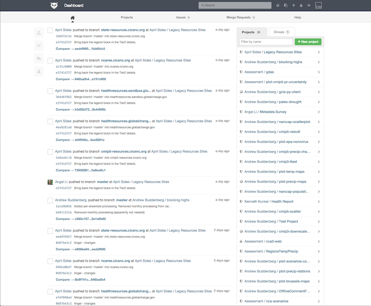
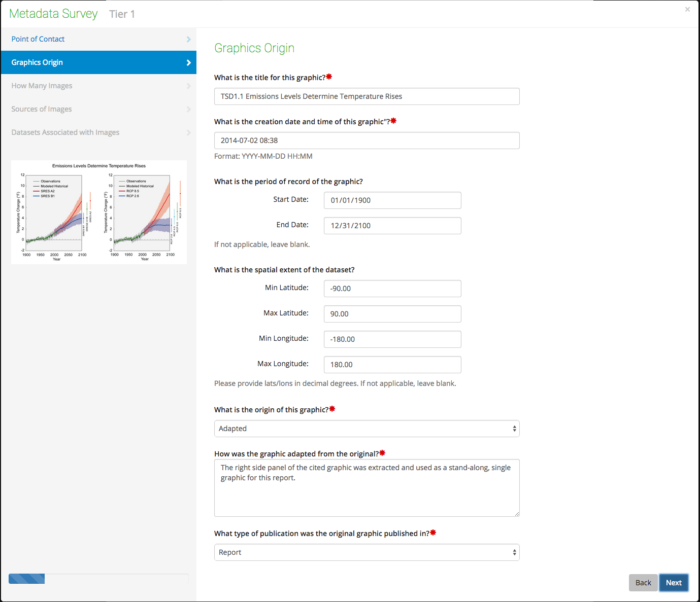
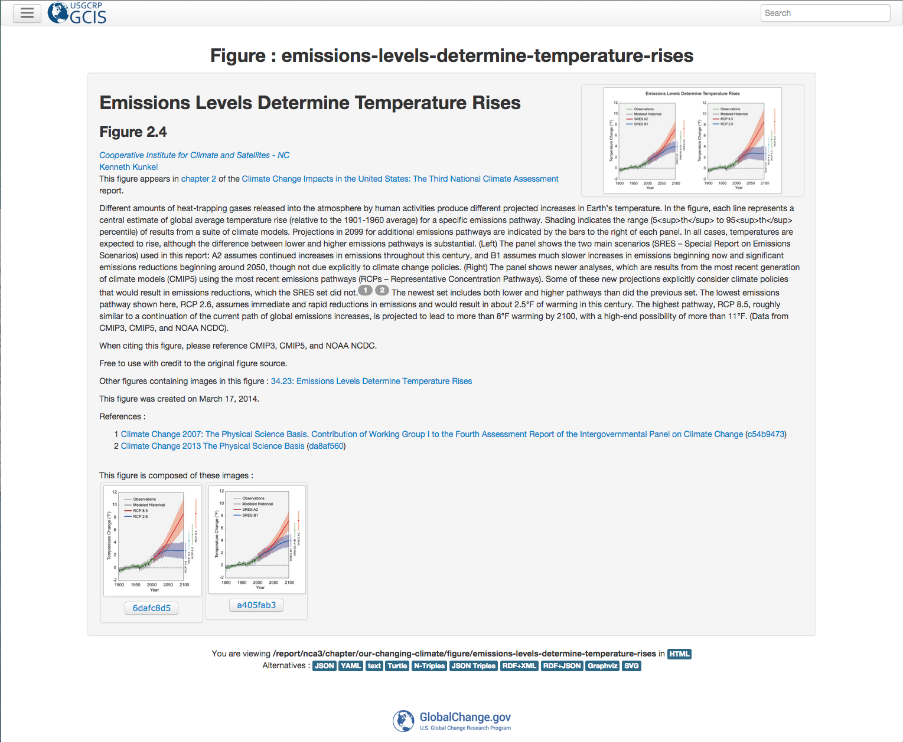
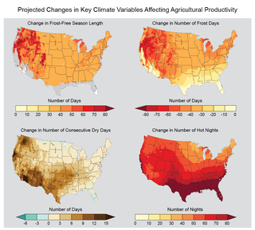

Andrew Buddenberg
Software Engineer @ CICS-NC
Technical Support for Climate Assessment Data Services

We do what we can...

Software Engineering Best Practices
Made extensive use of Python, NumPy, SciPy, and matplotlib as our preferred platform since they're tested, supported, free/open source, and accessible to the general public
Source code version control with git

- Facilitates collaboration
- Catalog of programs for easy recall
- Easy way of undoing experimental changes
- Provides traceability
Dataset version control with git annex
- Tracks file metadata and SHA-1 hash of file contents
- One can seamlessly checkout any version of a dataset in-place
- Ensures integrity of datasets; file contents are frozen unless changes explicitly checked in
Automated testing

Data processing jobs automatically run tests to validate integrity
So we don't make the same mistake twice!Unprecedented* collection of metadata

Over 200 of the 290 figures in the assessment are fully traced. For figures original to the NCA, detailed information about sub-figures, datasets, and the processes used to create the figure is available.
*as far as we knowGlobal Change Information System

- Searchable database of publications, citations, datasets, people, organizations, and more.
- Web API provides easy way to automatically move metadata in and embed on other websites.
High Performance Computing

At some point, the datasets got bigger while the deadlines got shorter, so we needed to take data processing to the next level.
Processing the CMIP3 Downscaled Dataset
Computing multi-model averages
| Processing Mode | Single Variable | All variables |
|---|---|---|
| Single process | 94 minutes | 114 hours |
| MPI (old cluster) | 5 minutes | 6 hours |
| MPI (new cluster) | 50 seconds | 61 minutes |
Fragments
Hit the next arrow...
... to step through ...
... a fragmented slide.
Fragment Styles
There's different types of fragments, like:
grow
shrink
roll-in
fade-out
current-visible
highlight-red
highlight-blue
Background Transitions
You can override background transitions per-slide.
<section data-background-transition="zoom">Pretty Code
function linkify( selector ) {
if( supports3DTransforms ) {
var nodes = document.querySelectorAll( selector );
for( var i = 0, len = nodes.length; i < len; i++ ) {
var node = nodes[i];
if( !node.className ) {
node.className += ' roll';
}
}
}
}
Code syntax highlighting courtesy of highlight.js.